Cyber Eternity
Cyber cafés were one of the foundations of early internet culture, and they appeared almost everywhere at once, translating the universal network into the culture of every country.
In Latin America, cyber café culture shaped the sensibility of a generation and set the tone for our relationship with the internet itself. In this place, consciousness seemed capable of extraordinary forms of life, blending our minds so strongly that a synthetic common sense began to take shape.
In Latin America, cyber café culture shaped the sensibility of a generation and set the tone for our relationship with the internet itself. In this place, consciousness seemed capable of extraordinary forms of life, blending our minds so strongly that a synthetic common sense began to take shape.
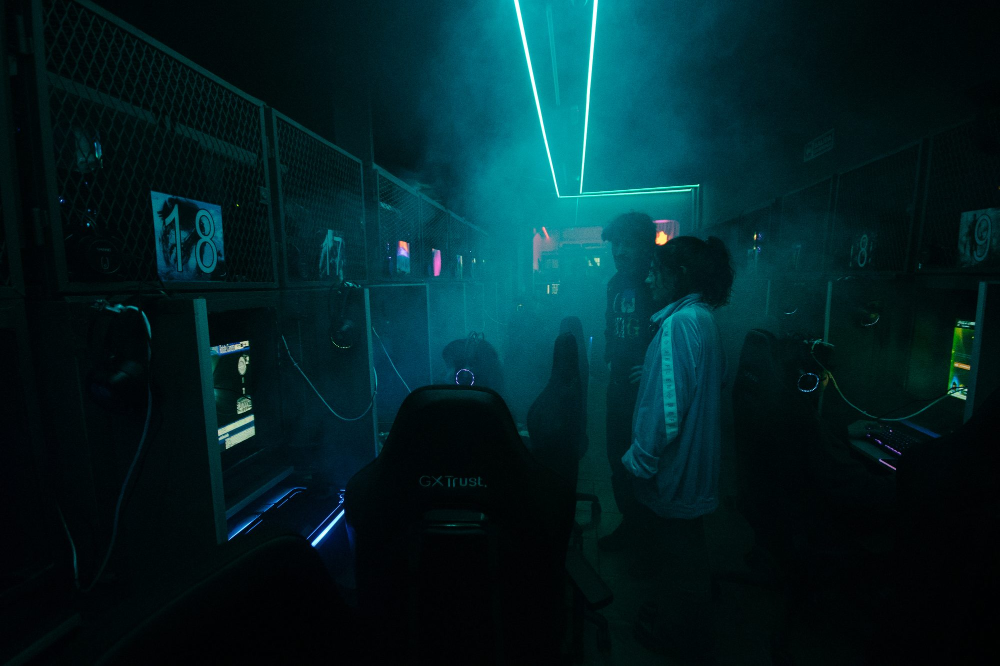
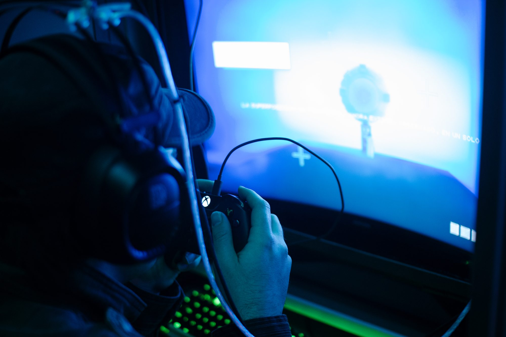
Eternity, in this context, echoes the collective dream of a planetary consciousness, of union. Back then, we did not suspect that we would become increasingly withdrawn from social life, spending our nights and days with systems that seem to know more about us than we know about ourselves.
Perhaps that is where this feeling of internet nostalgia begins to form. In nostalgia we find the fundamental tension of the project: the internet promised a life beyond physical space, yet it transformed space as we know it, reorganizing every aspect of our lives. Until we arrived where we are now, surrounded by dead machines and dead ways of thinking.
Perhaps that is where this feeling of internet nostalgia begins to form. In nostalgia we find the fundamental tension of the project: the internet promised a life beyond physical space, yet it transformed space as we know it, reorganizing every aspect of our lives. Until we arrived where we are now, surrounded by dead machines and dead ways of thinking.
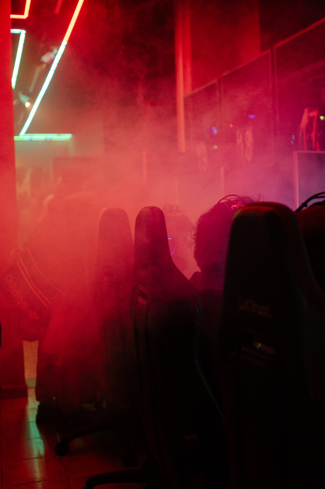
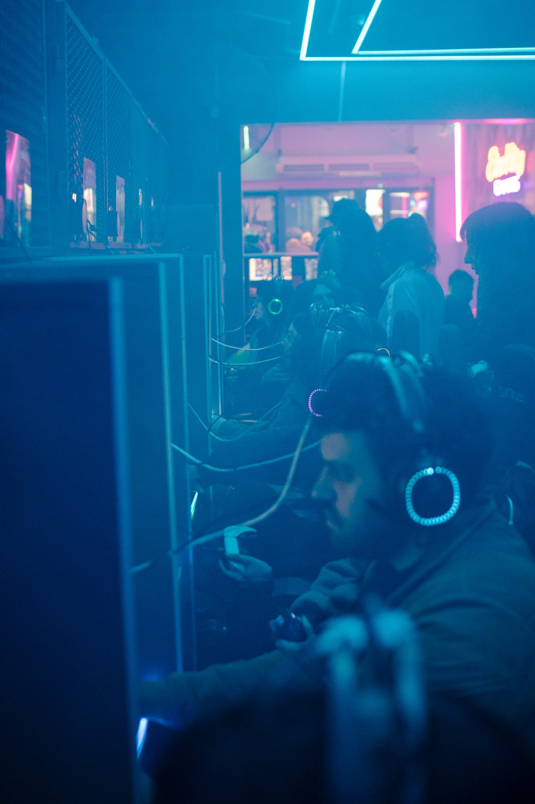
This encapsulated space gradually took over the rest of how our lives are organized, until everything became so absorbed by it that the very idea of “elsewhere” became impossible to conceive.
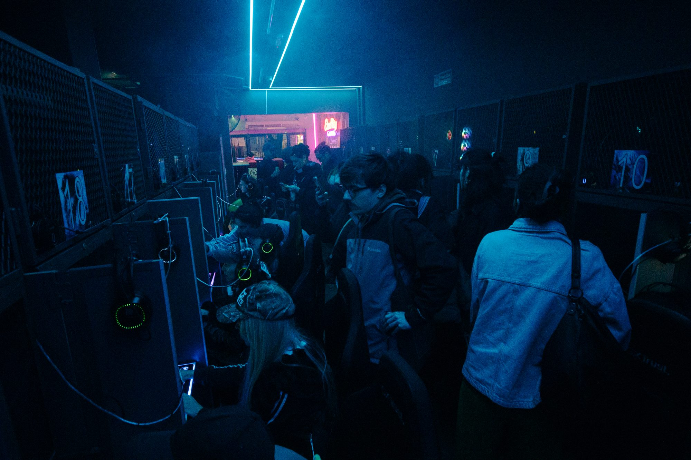
Cyber Eternity is an installation project that takes this space as its starting point to present art games by Joaquina Salgado. It takes its name from Eternity, a cyber café at Montañeses 2066 in Buenos Aires, open twenty-four hours a day for more than twenty years, where the project was first presented in October 2026.
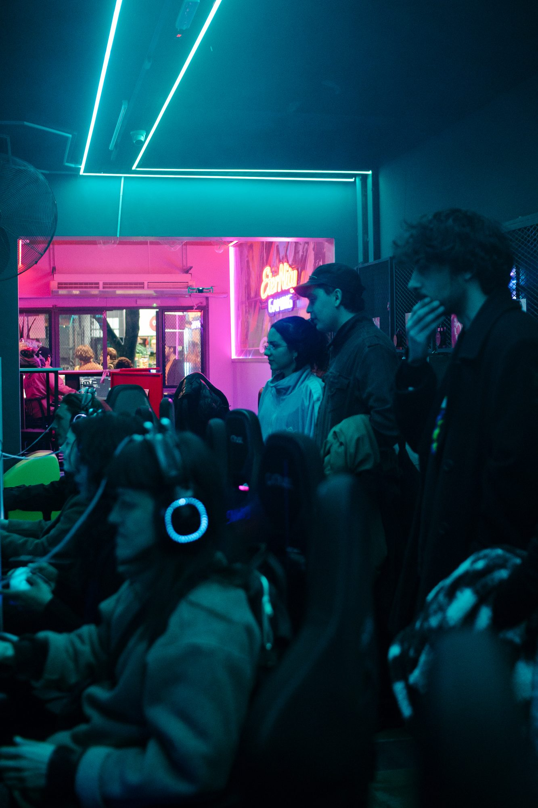
Old technological worlds resurface through nostalgic movements, and internet cafés have somehow managed to withstand the passage of time, probably because they bring people together instead of setting them apart.
In recent years, contemporary art has been making an effort to include video games in galleries and museums. But the truth is they didn’t originate in galleries. Going back to an internet café, inviting people in and letting them play feels like reconnecting with the core of the work.
In recent years, contemporary art has been making an effort to include video games in galleries and museums. But the truth is they didn’t originate in galleries. Going back to an internet café, inviting people in and letting them play feels like reconnecting with the core of the work.
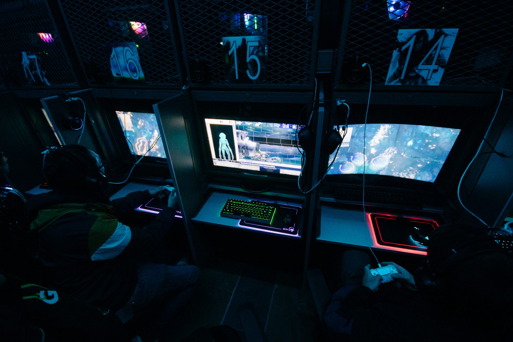
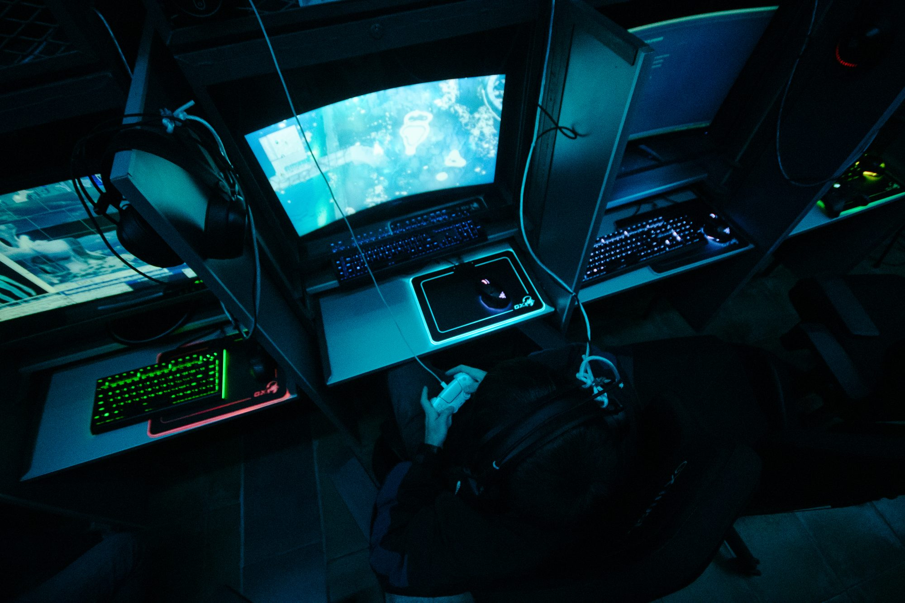
Every game presented in this installation offers a different POV on working with memory, turning our memories into worlds that others can explore.
Games presented
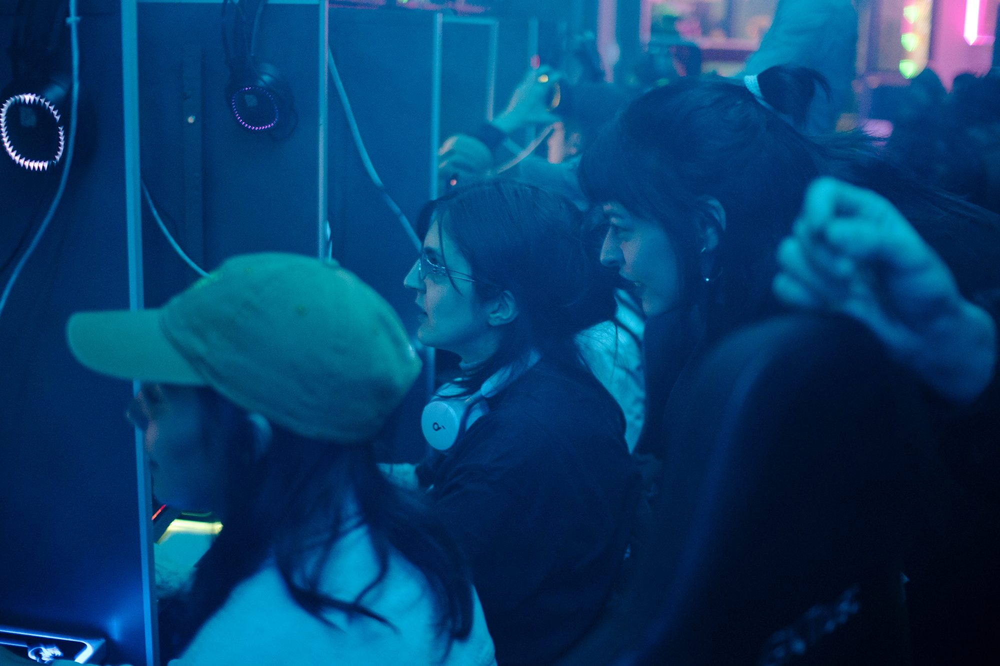
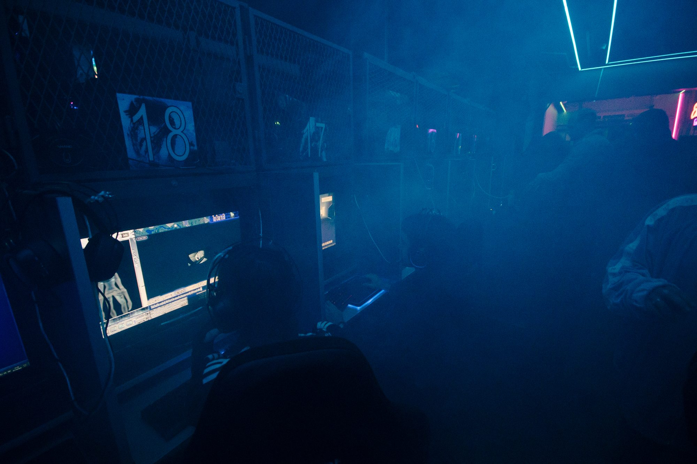
Working with memory means accepting that it is not something fixed. Every time we remember something, we remember it differently, and through new experiences we keep reconstructing the past and the story we tell ourselves about what happened. That reconstruction shapes how we act in the present, which is why memory is always in dialogue with imagination and creativity. This work approaches remembering as an active process, something we are participating in all the time. In this sense, internet cafés are the perfect context to develop this project.
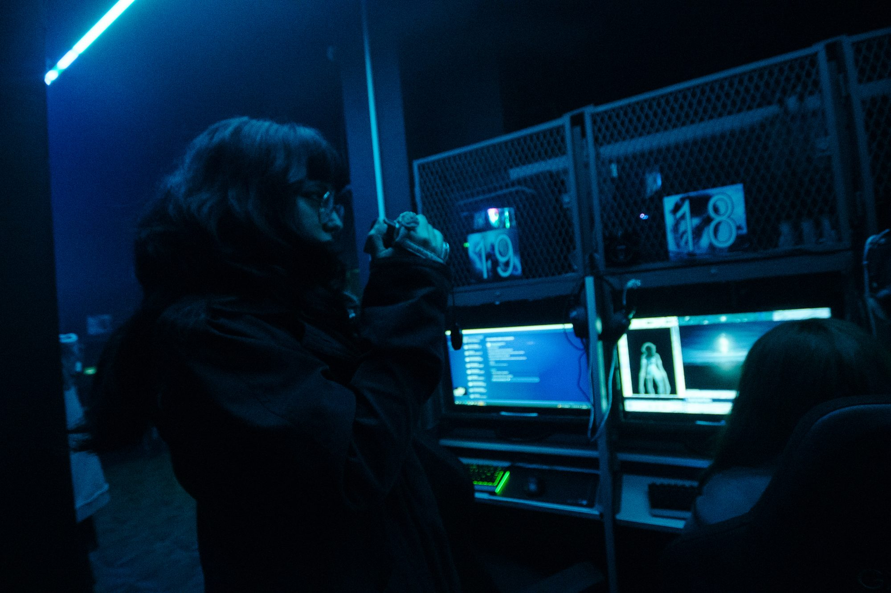
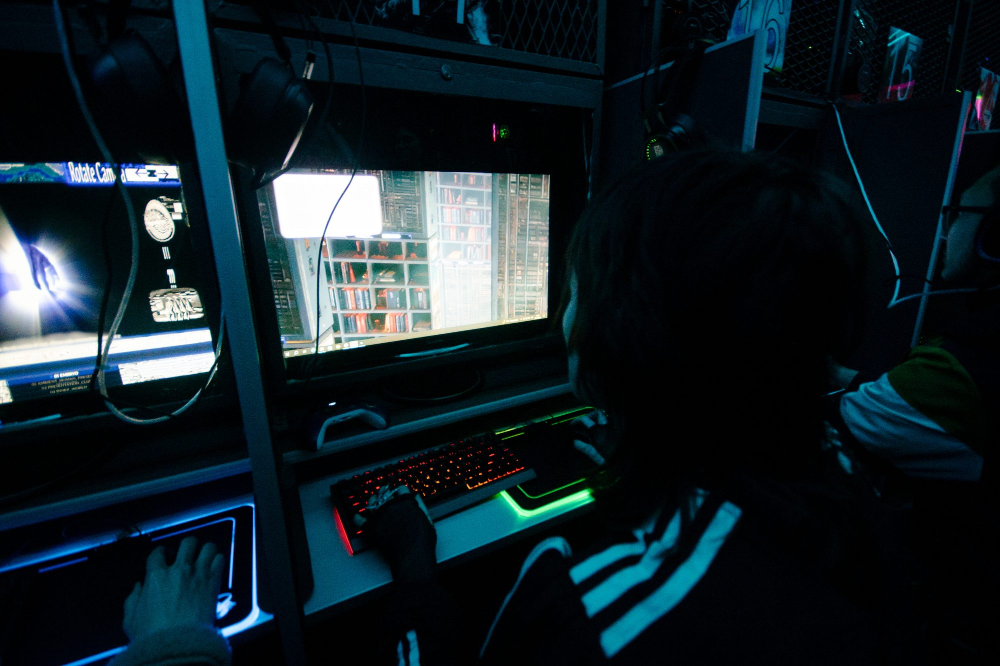
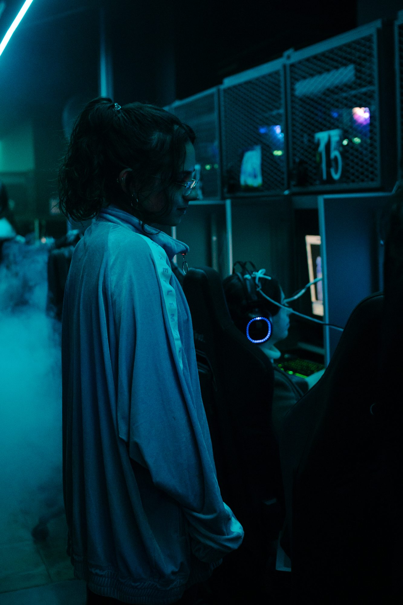
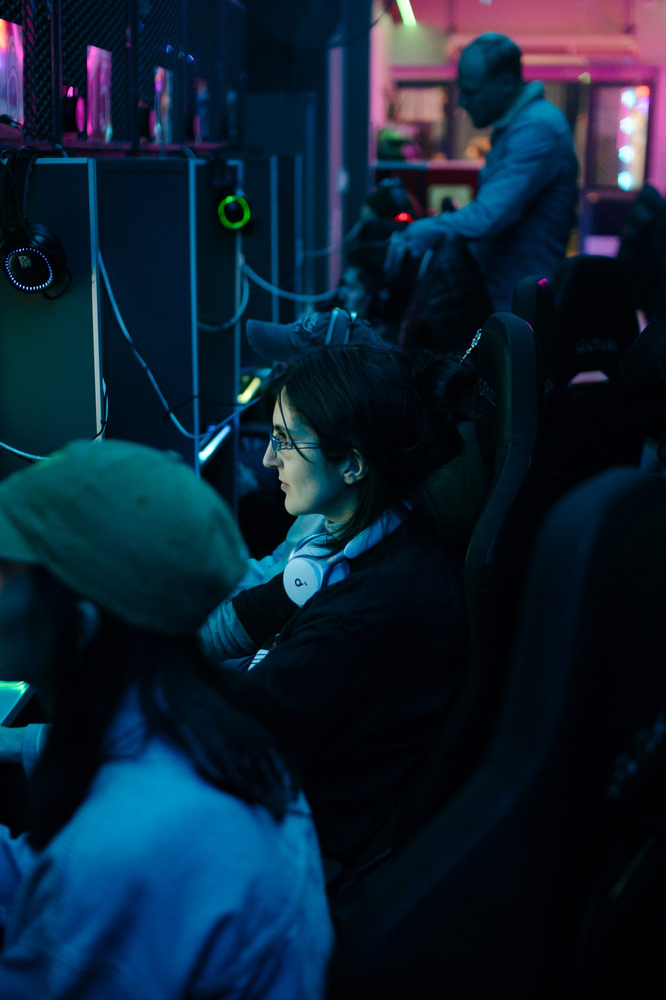
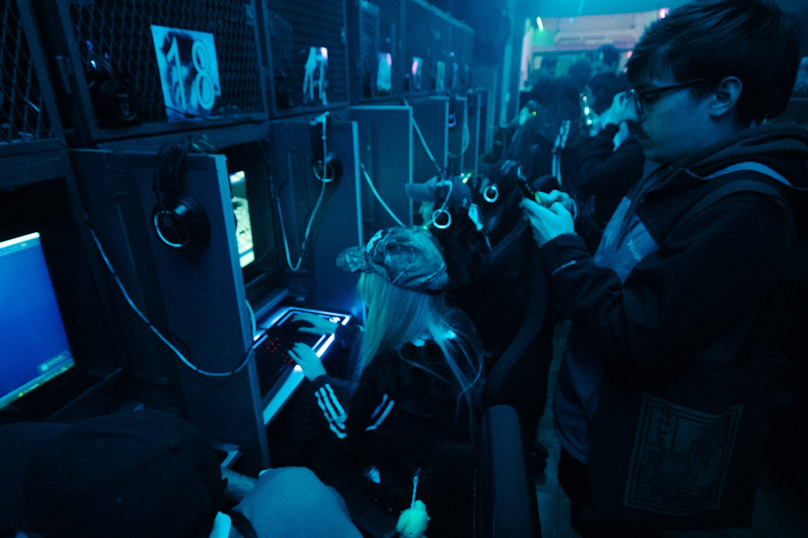
Photography Cande Etche
Production Nite Lite Studio